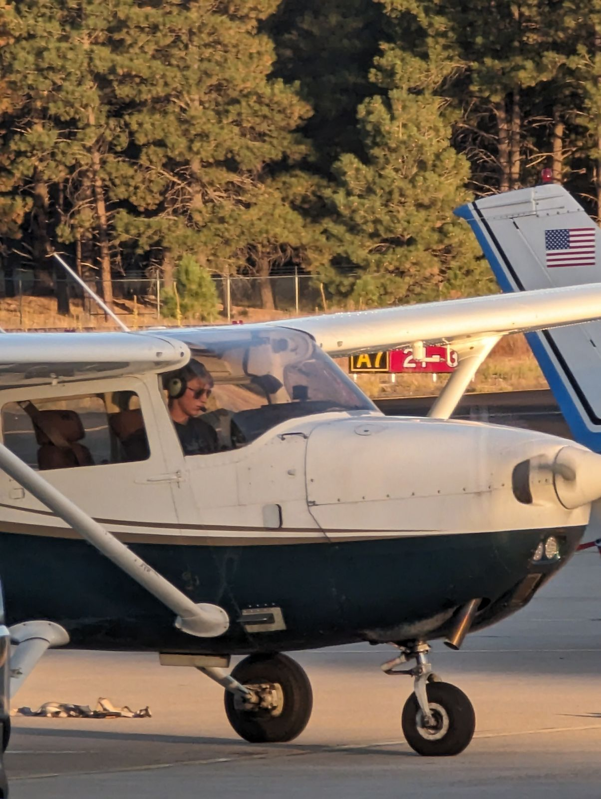
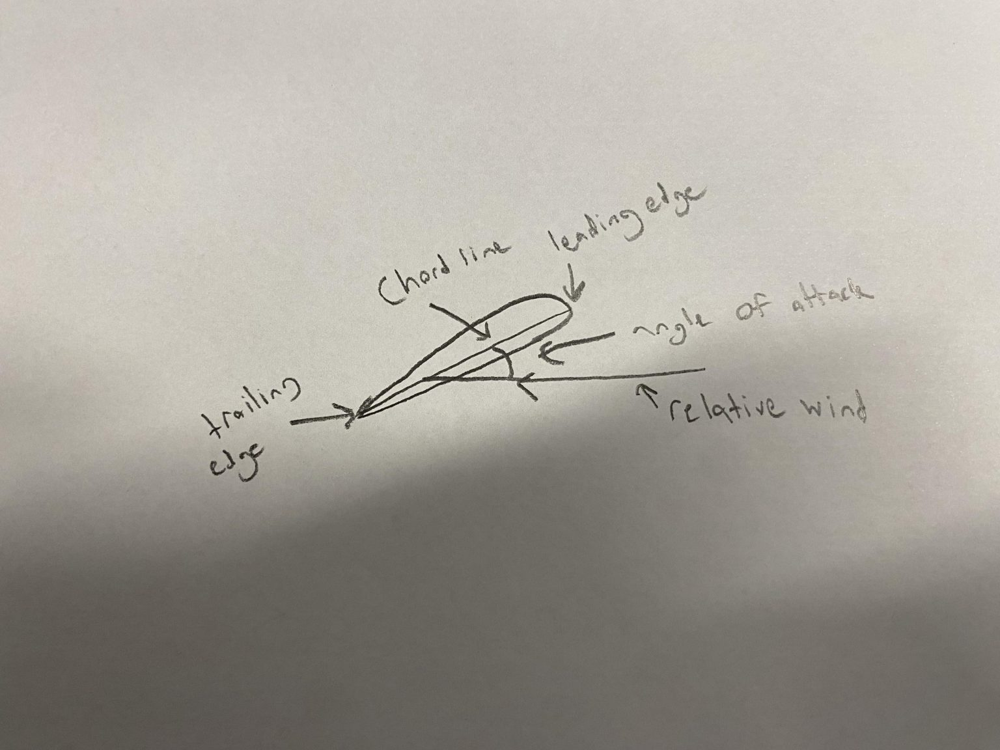
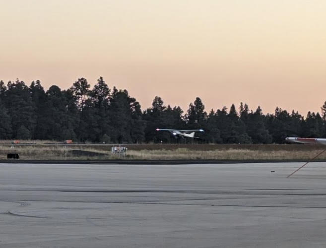
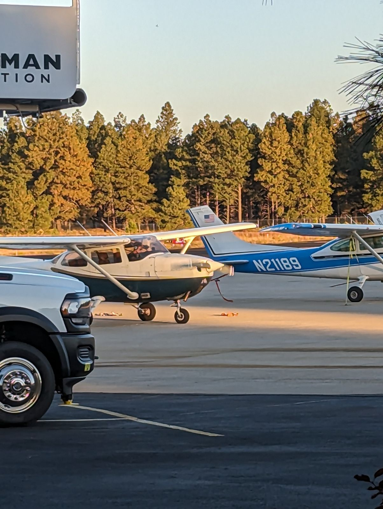
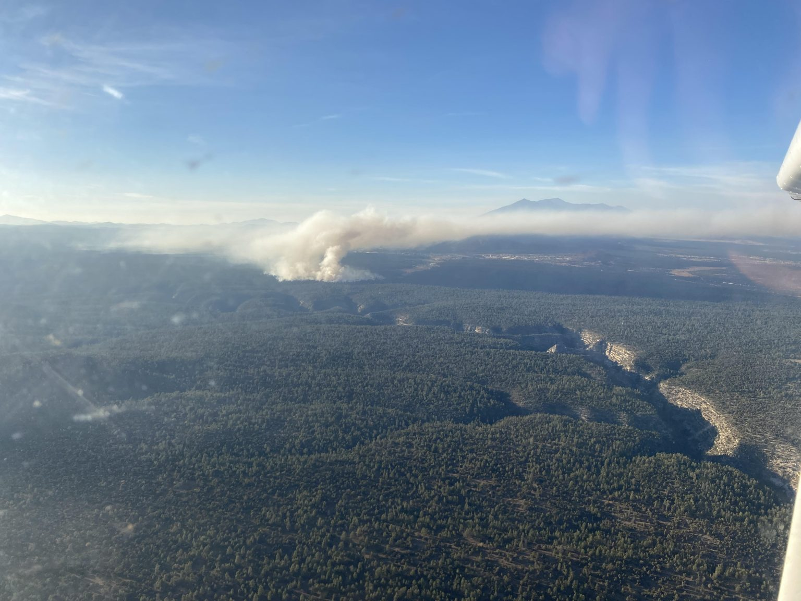

Internal Advisor: Luke Calhoun
External Advisor: Fred Gibbs
Internship Location: Flagstaff Airport
For my whole life I have desired to become a pilot, and recently I’ve been working on achieving that goal. For my project most of my effort will be spent on attaining a private pilot’s certificate. My flight instructor is Fred Gibbs, a gold seal CFII who has received a NAFI master flight instructor award. Gold seal requires a good pass rate of students on checkrides, and CFII means he is qualified to instruct for both private pilot and instrument rating purposes. I will gain the legally required 20 hours of flight instruction, 10 hours of solo flying time, 3 hours of night flying, 3 hours of simulated instrument time, and 3 hours of cross country. The FAA requires 40 hours to be able to attain a license, however in the modern era of aviation with more complex aircraft and airspace, most pilots get their certification in 60 hours. Beyond attaining a license I will be working to find the qualities that make for a better pilot.
February 21, 2024 2:25 am
Project Title: Learning to Aviate
My name is Luke P and I’ve always had a love for airplanes. My dad is an airline pilot so I grew up around the aviation world and my love of airplanes has lead me to pursue a career in aviation. I someday want to become an airline pilot. In order to achieve that goal there are a lot of steps I must take to get closer to the ultimate achievement of becoming an airline pilot. The first of the steps and one of the largest hurdles to clear is getting your first rating, the private pilot certificate. While it is one of the smaller ratings by size of requirements, it takes a lot because you’re starting from the ground up.
The legal requirements for getting a private pilot certificate are 20 hours of flight instruction, 10 hours of solo flying time, 3 hours of night flying, 3 hours of simulated instrument time, and 3 hours of cross country. The minimum requirement of total hours before you can get a private pilot’s license is 40 hours. The truth is, that’s a really antiquated model for getting a private pilot’s license. Back in a time where planes were simpler by a decent margin, the 40 hours made more sense. In the modern era where modes of navigation are far more diverse and varied, and the modern requirements of transponders and radios, it tends to take pilots far longer to complete their training. A general guess for how long it takes in modern aviation is 60 hours, however that’s a rough guess and it really depends on the person.
The truth is, the bulk of the work unfortunately isn’t all in the plane. Another pilot recently described it to me as “for every hour in the air it’s 2-3 hours of studying on the ground.” I don’t know quite how accurate this assumption is, but in my experience that feels about right. During the project I will document the process and try to figure out how to become a better pilot during my flight training. I hope to improve upon my current flying skill and learn how to improve during future training.
I’ve linked my proposal to read here:
February 28, 2024 8:00 am
Flagstaff isn’t an easy place to learn to fly. As you might have noticed Flagstaff is almost never without wind, and wind tends to add an extra layer of difficulty to flying. Along with that, Flagstaff is high altitude, and planes don’t perform as well at high altitudes. The weather here isn’t very flying friendly, so I miss a lot of days. For that reason I started my flight training long before the senior projects began because there is almost no way I would have finished in that time.
As I said, Flagstaff is really high altitude, but the thing that makes it worse is that it gets pretty hot in the summer. The temperature affects something called density altitude. You can think of density altitude as the altitude the airplane feels it is at. As the air temperature gets hotter, the distance between the air molecules increases and there is less air in an imaginary box. This hurts the performance of the engine because the engine can suck in less air, it ruins the fuel/air mixture of the engine, but luckily airplanes are able to control the fuel/air mixture with a control we call the mixture (pretty clever naming). When taking off out of Flagstaff, we lean the mixture, meaning less fuel is going to the engine so we waste less fuel. As you would expect this means that we get a lot less power out of Flagstaff which leads to decreased climb rates.
So with that, there’s a lot more to worry about when flying out of Flagstaff. I remember taking off out of Flagstaff the first time was quite a different feeling. Unlike a commercial plane you don’t get the drag racer feeling as you go down the runway, but it is still really fun looking out the front as the white lines pass under you while accelerating. Also, being in a light airplane, we takeoff in a much shorter distance. The first time taking off it feels really wobbly (the gusty conditions don’t help). From then on, the normal takeoff feels a lot more smooth but the first one is a bit of a shock. The other variations of takeoffs also feel a bit unstable at first, but with practice they become much less so. I remember climbing out from runway 21 was really rough that day because of the thermals created by heat on the ground in the summer months. We turned right to depart the pattern to the North where we flew over the city and not to far away from my house. As we were flying my instructor taught me proper use of the rudder, and just the basics of flying the airplane. My instructor would briefly make fun of me over controlling the aircraft by throwing around the controls for a few seconds. It might sound a little mean, but it actually helped a lot and made me more conscious of being lighter on the controls.
A Cessna 172, which is what we fly, isn’t super prone to it, but bad flying and over controlling the aircraft can lead to something called pilot induced oscillations. Essentially what happens is the plane will bank to a certain side, and the pilot will over correct it and bank the airplane to the other side. The pattern continues and you start to look like Cougar in Top Gun.
After flying over the city we turned to the Southeast and headed towards Lake Mary, which is our “practice area”. Here I learned my first maneuvers such as steep turns and stalls. Stalls are a long winded thing to explain and I’ve already gone on for too long, so I’ll save that for another post, but essentially the wing loses lift, and we need to learn how to recover a stall back to normal conditions of flight.
When we were done learning the first basic maneuvers required for the private pilot check-ride, we headed back to the Flagstaff airport where I shadowed the controls as my instructor landed. It concluded my first flight of many. After flying we always do a “de-brief” where we talk about what was done right and what needs to be improved, and so the very first step of flying was finally completed.
March 6, 2024 8:00 am
Flying isn’t like driving a car. We don’t jump in the airplane turn the key and go like you might in a car. In a car, if you start driving and you have a leaky tire, it becomes a pretty simple matter of pulling over. In the air, we cant pull over to change the tire. For this reason, we have procedures to preform before we take off called the preflight. The preflight is one of the first things I learned when taking lessons.
We do the preflight as a flow, which means we memorize the contents of the checklist, preform the checklist from memory and then come back to the checklist at the end of the preflight to make sure each of the items were completed. The preflight involves checking to see if lights are still working, checking that the control surfaces are still free, making sure bolts are properly secured, making sure we have oil and fuel, checking that our fuel isn’t contaminated, etc.
The preflight takes time before it becomes more routine. At first student pilots will often miss checklist items when walking around, and when they return to the checklist they have to go back out and perform that task. With time the preflight becomes muscle memory and easy to do without missing anything.
Beyond just learning the basic procedures, the first flight lessons are spent learning how to fly the airplane. That includes things like steep turns and slow flight. As I said in the last post I am going to attempt to explain stalls. First, try to imagine a 2D cross section of a simple airplane’s wing. The wing should have a round front, which is called the leading edge, and a pointier end, called the trailing edge. Now, imagine a straight line starting from furthest point of the leading edge to the trailing edge. This is called the chord line. Then there is something called the relative wind. It is easier for this to imagine the wing as a stationary object in a wind tunnel. The relative wind is basically just where the airmass is moving relative to the wing. The angle between the chord line and relative wind is called the angle of attack. Where stalls come in is at the critical angle of attack. The critical angle of attack is when the angle gets large enough that the wing’s lift is dramatically decreased, and the wing’s drag is dramatically increased.
I mentioned earlier the concept of slow flight. Something to understand is that as the plane slows, to maintain straight and level flight the airplane has to pitch up, and since the relative wind is coming from the same direction, the angle of attack increases. In the airplane we have a “stall speed” which is an estimate of what speed in straight and level flight the airplane will stall at. The airplane can stall at much higher speeds, but for the purpose of slow flight I’ll put that off. Slow flight is holding the airplane straight and level very close to your stall speed. It demonstrates the loss of responsiveness in the controls as stalls are approached.
The early maneuvers we learn such as slow flight are important to our understanding and feel of the airplane.
March 20, 2024 12:30 pm
One of the hardest parts about learning to fly an airplane is learning to constistently make smooth landings. As part of our training we practice landings by flying in something called the pattern. It’s really simple, its just a rectangle that we use to takeoff and return to the runway with. When we take off from the runway we are flying something called the upwind leg which isn’t a term that gets used very often. We climb until a certain altitude or distance from the runway, whichever comes later. After the other leg we turn crosswind which is another not commonly used term. The crosswind leg is flown directly perpendicular to the direction of the runway to put some distance between the plane and the runway. When making a pattern we make sure we are within a close enough distance to the runway so that in the unlikely event of an engine failure we would be able to “safely” glide back to the runway. The next leg is the downwind which is a commonly used term. The downwind is flown parallel to the runway but in the opposite direction. When we see that we are at the end of the runway we begin our downwind checklist which is short, but needs to be swift. Now I can very quickly recite it, but when I was learning the pattern, the task loading of flying the airplane and performing checklist items was a little much and I would often do things in the wrong order or miss items. If the downwind checklist was completed properly, we should be descending and slowed up to 65-70kts indicated airspeed. Around 700 feet above ground level we turn to the base leg which is perpendicular to the runway like the crosswind but this time heading the other direction. The base leg is quick so the checklist has to be done swiftly or else we go past the runway and have to go back around the pattern. Once we’ve completed the base leg we look to the runway and begin our final leg which is actually called a “final”. In Flagstaff we have a PAPI(precision approach path indicator) which are lights that shine a certain color depending on your angle to the runway. It’s super helpful information so depending on the lights we see, we either descend quicker or slower so when we get to the runway, we’re in the right place. From there we land the plane (hopefully smoothly) and repeat the pro[sic]
March 20, 2024 12:30 pm
As a passenger of a flight when you’re landing you only really think of one metric to judge the quality of the landing which is smoothness. To the pilot, there’s a lot of other factors that actually matter more. For a little background, my dad is an airline pilot so I hear a lot from him in his work experience. Something I hear him complaining about with newer and younger first officers is that they’re landing too far down the runway. In big jets they aim for one thousand feet down the runway where there are two huge white squares. Under normal circumstances we don’t aim for the very beginning of the runway because a gust could slow you down and momentarily decrease lift then all of a sudden you aren’t on the runway. My dad flies into John Wayne International(SNA) a lot, and SNA is known for not having a very long runway for big jets. The runway is only 5,700 feet long, so floating past the thousand foot marks becomes a safety concern. Not being able to stop by the end of the runway isn’t generally a concern for us in the cessna 172 because I’ve made landings comfortably within 1000 feet. That being said, it’s good to build good habits now when it’s not a safety concern. The other thing that factors in on landings is being on centerline. Some airports have far skinnier runways and being in the center of the runway is imperative. Landing is one of my favorite challenges in flying because it’s really difficult to get everything at once. sometimes I’ll have a really smooth landing but it’s further down the runway than I wanted it to be. Other times I’ll do a simulated short field landing and I’ll get it on the aiming point and land really short, but the landing will be really hard. It’s incredibly frustrating but that just makes it really rewarding when I get it right. One of my most recent hurdles with landings was that I had a streak of landings where I flared to high above the runway. Flaring is the act of pitching the nose up to reduce the rate of descent just before you make contact with the runway. I kept struggling to flare at the right height so I asked my dad and my instructor about it and they explained to me that I was focusing to hard on the point I was aiming to land on, but right before a pilot begins their flare, they need to look up, and basically to the end of the runway which counterintuitively gives us a better understanding of our height above the ground. It’s the small bad habits that I overcome with each landing that make it really fun to me.
A far away picture from a video of one of my landings:
March 27, 2024 12:30 pm
In my opinion, the biggest step of flight training as a private pilot is definitely going up for the first time solo. I think a lot of the public doesn’t understand that during training as a pilot, we have to fly a decent amount on our own. I believe that soloing is very different from flying with an instructor. If something were to break on the plane now all of a sudden you no longer have that safety net of an instructor to save you.
Weeks before my solo I knew that all my training in those weeks was to prepare me to be ready to go up by myself. At the end of one of my lessons, my instructor said that he thought I was ready for my solo and that my next lesson he was going to fly with me for a few laps around the pattern, and if he still felt confident he was going to let me solo. On the day of that lesson I woke up decently early to have breakfast with some family friends. I went outside and it was windy. I already had nerves just from the fact that I knew today was probably my solo, and the wind did not help with my confidence. I met up at the airport with my instructor later that day and we went up and I think we flew 2 laps around the pattern together. He asked me about my confidence with regards to soloing that day, and I told him that I felt I was definitely capable of performing the first solo but that I was still a little afraid. We went inside and he signed an endorsement in my logbook to solo.
I was definitely slower starting up the airplane than usual. It’s pretty strange to me that at 17 years old I’m handed the keys of a plane. At the same time, I was definitely confident that I could conduct a safe flight, however it still didn’t feel comfortable. Normally the wind tends to favor runway 21 in Flagstaff, however on the day of my first solo it was runway 3 so the visual cues weren’t as practiced, but I still felt confident. After getting clearance, I pulled onto the runway, put in full throttle, and sped down the runway. I lifted the plane off the runway and for the first time in my life I was in the sky on my own. At this point I feel like I had too much to focus on to be scared. I was sort of stressing throughout my procedures but it went away pretty quickly. I was on a pproach for my first landing and I was having a bit more trouble maintaining the glideslope because of the lighter payload of the airplane. I’m never super proud of my landings because there is always something to work on, but for my first landing on my own, I wasn’t too dissapointed about it. I was lucky enough to have my first solo at a time where the sun was beginning to set so I got to see a pretty horizon line for my solo. My next two landings were acceptable, and on that third and final landing, I pulled off the runway onto the taxiway and gave a heavy sigh. I got instructions to park from air traffic control, and so I taxied over to parking and pulled in front of the parking space. I did my shut down procedures and my instructor shook my wing as a sort of congratulation. When I looked over that was when the stress got lifted away and I smiled. I did a debrief with him and my dad, then I went home and celebrated. I think my first solo might be my proudest achievment to date. Looking back to years ago I definitely had dreams about getting to this point so it means a lot.
Starting up the plane:
April 10, 2024 12:30 pm
After my first solo my instructor determined me to be ready for unsupervised solos. Essentially what that means is that I can rent the airplane and go up on my own without needing an instructor there to sign me off beforehand. Unsupervised solos were one of my favorite parts of training because I would go to the airport, fill out a quick risk assessment form, then I would be handed the keys to the plane, go out and preflight then takeoff. Unsupervised solos were in a way the first time I started to feel like a pilot. I wrote lists of my weaknesses down before going to fly and I would do repitions of my poorer areas until I was satisfied or getting tired. I really loved practicing short field landings on my own. Short field landings require a higher degree of accuracy so it demanded a lot more of me to make the landings smooth. Especially on days where the wind was a bit stronger, landings were quite challenging and I got pretty good practice in. I also went out to the practice area on my own to practice steep turns, ground reference manuevers, and slow flight. Ground reference manuevers are tricky because they require constant switching of view from between the instrument panel and outside. The truth is ground reference manuevers probably aren’t something that I pilot is going to be using often, but its a demonstration of an ability to not fixate on one thing. There are many variables to consider when flying an airplane so if pilots get to fixated on making one variable such as altitude be perfect, all the other things start to diminish. I think multi tasking would be a poor way to describe it as you can’t realistically do multiple things at once, it’s more of a speedy switch between controlling different factors. Even though flying can be fairly taxing, I find it really enjoyable to be focused on flying.
Walnut Canyon and a fire:
April 10, 2024 12:40 pm
Whenever I use the term cross country to people outside of the aviation world they always have this surprised look on their faces. At first this really confused me because I didn’t think it was anything crazy but then I realized that when I say cross country, people thing I literally mean across the country. The truth is, it’s a lot less grand than that. For my purposes the definition of cross country is just a flight between airports that are over 50 nautical miles apart.
Throughout my early flight training I was looking at cross countries as this far way task that was going to be difficult. The truth is when I actually got there it didn’t feel like much. In fact the actual motor skills flying part of cross countries is pretty easy most of the time. The bulk of the work for the cross country section of training is on the ground. The flight planning is the most difficult task and honestly that becomes pretty simple by the end of it. My first cross country was with my instructor between Flagstaff, Wickenburg, and Williams. Pretty much the only task for most of the flight is making sure you’re still going straight and level. Thats not to say it isn’t fun though. Flying, especially in light aircraft, allows you to see the world in a way you wouldn’t get to otherwise. Arizona has quite a beautiful landscape so I get to see really amazing sights on my cross countries. On my first cross country we had to go around Bill Williams Mountain on approach into H.A. Clark Memorial Field. With the snow on top it was really pretty and it made me so glad that I don’t live in Kansas. Even though it wasn’t a super huge challenge, I completed that first cross country with my instructor and I was really excited to go forward with training.
April 27, 2024 11:09 am
After my first cross country flight my instructor and I did a few more cross countries together to help me get a handle on everything before sending me on my own. During that time I also buillt the time for my night experience requirements. I thought doing pattern work and landings at night was quite fun, and surprisingly the quality of my landings didn’t decrease drastically at night. The scary part was the night cross country. The route was Flagstaff to Payson to Cottonwood and back to Flagstaff. It was a really quiet flight, but it was uncomfortable not being able to see the terrain underneath you. Unlike the day time you don’t a a good visual reference to how high you are off the ground, instead, over the unpopulated areas you look down and it’s just an ocean of black. Descending into Payson wasn’t a normal descent because the Mogollon rim is in the way. As I said, you can’t really seee the ground when you’re flying at night, so if you didn’t plan ahead, you could easily smack into the Mogollon rim instead of descending properly into Payson. Next was Cottonwood, landing was fine, but taking off was pretty memorable. I know from the landscape that there is a hill off the end of the runway that we would be climbing towards. Unfortunately, it’s practically invisible at night so the entire time we were climbing out I was stressing looking at the gps to make sure that we were outclimbing the terrain. It ended up fine, but it definitely gave me a sense of the dangers night flying poses.
After I was done with those, I began flying to other airports on my own. It can be a little lonely, but it was fun, it made me feel like a lot more of a pilot. I would say my most challenging solo was between here, Falcon Field (in Mesa), and Sedona. I hadn’t been to Falcon or Sedona so I didn’t have any past experiences to reference. Flacon Field is probably the busiest General Aviation airport in Arizona, so much so that the day I flew there they had two Tower frequencies in use and a Ground Frequency. The communication aspect of Falcon is a little tricky because you have to respond quickly or else you’ll get cut off. There’s also a lot of student traffic there so there are some slow talkers that take up radio space. It was all fine though, I was just really hot sitting on the runway waiting for my clearance. Sedona carries a reputation with it that it’s a really difficult airport. It is a little trickier but I think the reputation that it carries is a little overblown. I actually didn’t have a huge struggle with it. That last cross country was a really good experience because it made me use a lot of the training that I had been given.
April 27, 2024 11:28 am
Everything really feels like its coming together. These past 2 weeks I’ve been doing a lot of pattern work trying to perfect my landings and I really feel like I’ve been nailing it. I’m almost always on centerline, they’re almost always smooth, my flare has gotten a lot more precise and I’m not floating my landings anymore. I was soloing and I got like 8 different landings in over 2 seperate flights and I was a little scared that my good landings were a fluke.
So, I went to fly with my instructor and it was a really gusty windy day, so we decided not to practice manuevers and we stayed in the pattern. The first landing we praticed was a soft field landing and even in the gusty conditions I felt like it was rolled on. Next we did a short field landing which I can’t normally get to be accurate and smooth at the same time but I was on a roll that day so I got it on the runway smoothly and had really good stopping distance. After, that we switched to more emergency procedure focused training. We tried a no flaps landing, which is a pretty different thing because you have a shallower descent angle and you come in a lot faster. I definitely floated that landing further than what I wanted, but that’s super common for no flaps landings due to the higher approach speed. It was otherwise a pretty good landing. I was afterwards given a really difficult scenario: power failure. That isn’t the same as an engine failure, in this case the engine is still producing power, but you can’t change the power setting. It’s really quite terrifying because you really have to do everything to lose energy and slow down the airplane. My landing was almost a really bad landing but luckily I was able to catch it at th last second and it worked out alright. It definitely had my heart racing though. I’ve been doing a lot of studying recently trying to get ready for my checkride. Unfortunately we couldn’t get anyone to come to Flagstaff until May 13th so I will be studying and practicing until then. I really feel like it has all come together at the right time and I’m feeling pretty good about the checkride.